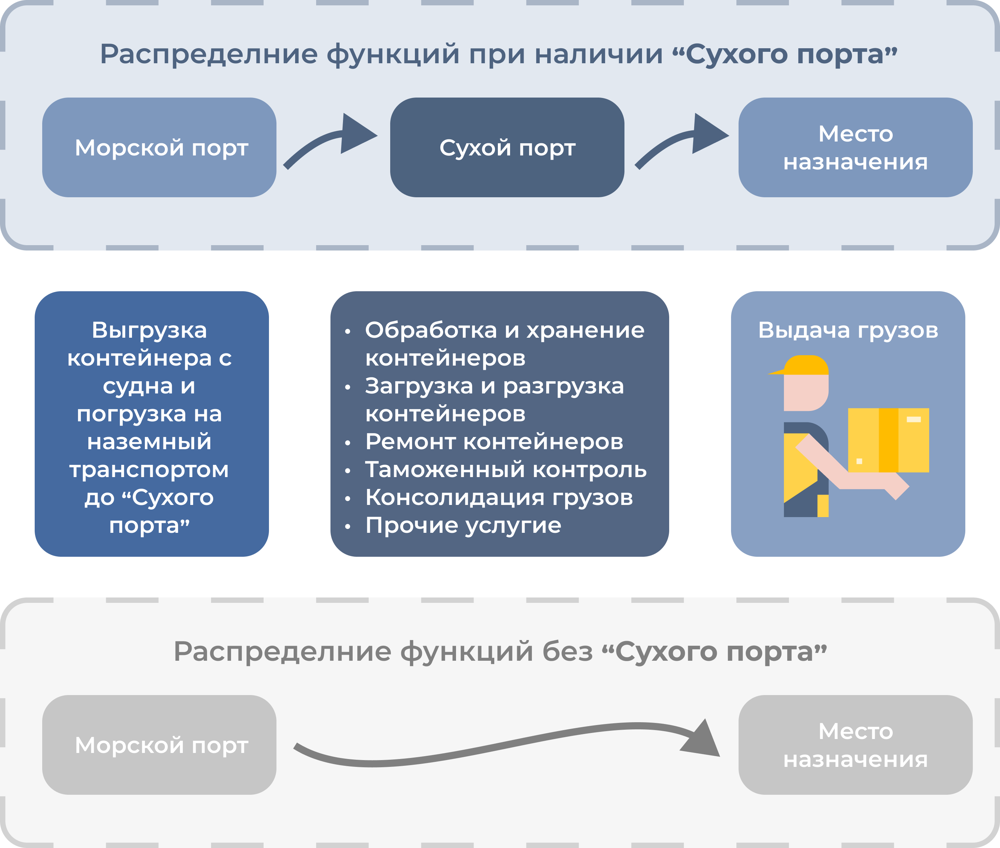

<h3 class="slidename">Место сухого порта в транспортной цепочке </h3>
<div class="animated zoomIn ng-scope" style="animation-delay: 300ms; ">
<div class=""></div>
</div>
<br>
<p>При отсутствии «Сухого порта» большую часть функций выполняет морской порт. </p>
